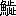

| ゆく雲 | |
| 樋口 一葉 | |
| (2012) | |
ゆく雲
樋口一葉
上
酒折
の宮、山梨の岡、鹽山、裂石
、さし手の名も都人
の耳に聞きなれぬは、小佛
さゝ子
の難處を越して猿橋のながれに眩
めき、鶴瀬
、駒飼
見るほどの里もなきに、勝沼の町とても東京
にての場末ぞかし、甲府は流石に大厦
高樓、躑躅
が崎の城跡など見る處のありとは言へど、汽車の便りよき頃にならば知らず、こと更の馬車腕車
に一晝夜をゆられて、いざ惠林寺
の櫻見にといふ人はあるまじ、故郷
なればこそ年々の夏休みにも、人は箱根伊香保ともよふし立つる中を、我れのみ一人あし曳の山の甲斐に峯のしら雲あとを消すこと左りとは是非もなけれど、今歳この度みやこを離れて八王子に足をむける事これまでに覺えなき愁
らさなり。
養父清左衞門、去歳
より何處开處
からだに申分ありて寐つ起きつとの由は聞きしが、常日頃すこやかの人なれば、さしての事はあるまじと醫者の指圖などを申しやりて、此身は雲井の鳥の羽がひ自由なる書生の境界
に今しばしは遊ばるゝ心なりしを、先きの日故郷よりの便りに曰く、大旦那さまこと其後の容躰さしたる事は御座なく候へ共、次第に短氣のまさりて我意
つよく、これ一つは年の故には御座候はんなれど、隨分あたりの者御機げんの取りにくゝ、大心配を致すよし、私など古狸の身なれば兎角つくろひて一日二日と過し候へ共、筋のなきわからずやを仰せいだされ、足もとから鳥の立つやうにお急きたてなさるには大閉口に候、此中
より頻に貴君樣を御手もとへお呼び寄せなさり度、一日も早く家督相續あそばさせ、樂隱居なされ度おのぞみのよし、これ然るべき事と御親類一同の御決義、私は初手から貴君樣を東京へお出し申すは氣に喰はぬほどにて、申しては失禮なれどいさゝかの學問など何うでも宜い事、赤尾の彦が息子のやうに氣ちがひに成つて歸つたも見て居り候へば、もと〳〵利發の貴君樣に其氣づかひはあるまじきなれど、放蕩ものにでもお成りなされては取返しがつき申さず、今の分にて孃さまと御祝言、御家督引つぎ最はや早きお歳にはあるまじくと大賛成に候、さだめしさだめし其地には遊しかけの御用事も御座候はん夫れ等を然るべく御取まとめ、飛鳥もあとを濁ごすなに候へば、大藤の大盡が息子と聞きしに野澤
の桂次
は了簡の清くない奴、何處やらの割前
を人に背負せて逃げをつたなどゝ斯ふいふ噂があと〳〵に殘らぬやう、郵便爲替にて證書面のとほりお送り申候へども、足りずば上杉さまにて御立かへを願ひ、諸事清潔
にして御歸りなさるべく、金故に恥ぢをお搔きなされては金庫の番をいたす我等が申わけなく候、前申せし通り短氣の大旦那さま頻
に待ちこがれて大ぢれに御座候へば、其地の御片つけすみ次第、一日もはやくと申納候、六藏といふ通ひ番頭の筆にて此樣の迎ひ状いやとは言ひがたし。
家に生拔
きの我れ實子にてもあらば、かゝる迎へのよしや十度十五たび來たらんとも、おもひ立ちての修業なれば一ト廉の學問を研
かぬほどは不孝の罪ゆるし給へとでもいひやりて、其我まゝの徹らぬ事もあるまじきなれど、愁らきは養子の身分と桂次はつく〴〵他人の自由を羨みて、これからの行く末をも鎖りにつながれたるやうに考へぬ。
七つのとしより實家の貧を救はれて、生れしまゝなれば素跣足
の尻きり半纏に田圃へ辨當の持はこびなど、松のひで
を燈火にかへて草鞋
うちながら馬士歌
でもうたふべかりし身を、目鼻だちの何處やらが水子
にて亡せたる總領によく似たりとて、今はなき人なる地主の内儀
に可愛がられ、はじめはお大盡の旦那と尊びし人を、父上と呼ぶやうに成りしは其身の幸福
なれども、幸福ならぬ事おのづから其中にもあり、お作といふ娘の桂次よりは六つの年少
にて十七ばかりになる無地の田舍娘
をば、何うでも妻にもたねば納まらず、國を出るまでは左まで不運の縁とも思はざりしが、今日この頃は送りこしたる寫眞をさへ見るに物うく、これを妻に持ちて山梨の東郡に蟄伏
する身かと思へば人のうらやむ造酒家
の大身上は物のかずならず、よしや家督をうけつぎてからが親類縁者の干渉きびしければ、我が思ふ事に一錢の融通も叶ふまじく、いはゞ寶の藏の番人にて終るべき身の、氣に入らぬ妻までとは彌々の重荷なり、うき世に義理といふ柵
みのなくば、藏を持ぬしに返し長途の重荷を人にゆづりて、我れは此東京を十年も二十年も今すこしも離れがたき思ひ、そは何故と問ふ人のあらば切りぬけ立派に言ひわけの口上もあらんなれど、つくろひなき正の處こゝもとに唯一人すてゝかへる事のをしくをしく、別れては顏も見がたき後を思へば、今より胸の中もやくやとして自ら氣もふさぐべき種なり。
桂次が今をる此許
は養家の縁に引かれて伯父伯母といふ間がら也、はじめて此家へ來たりしは十八の春、田舍縞の着物に肩縫あげをかしと笑はれ、八つ口をふさぎて大人の姿にこしらへられしより二十二の今日までに、下宿屋住居を半分と見つもりても出入り三年はたしかに世話をうけ、伯父の勝義が性質の氣むづかしい處から、無敵にわけのわからぬ強情の加減、唯々女房にばかり手やはらかなる可笑しさも呑込めば、伯母なる人が口先ばかりの利口にて誰れにつきても根からさつぱり親切氣のなき、我欲の目當てが明らかに見えねば笑ひかけた口もとまで結んで見せる現金の樣子まで、度々の經驗に大方は會得のつきて、此家にあらんとには金づかひ奇麗に損をかけず、表むきは何處までも田舍書生の厄介者が舞ひこみて御世話に相成るといふこしらへでなくては第一に伯母御前が御機嫌むづかし、上杉といふ苗字をば宜いことにして大名の分家と利かせる見得ぼうの上なし、下女には奧樣といはせ、着物は裾のながいを引いて、用をすれば肩がはるといふ、三十圓どりの會社員の妻が此形粧
にて繰廻しゆく家の中おもへば此女が小利口の才覺ひとつにて、良人が箔
の光つて見ゆるやら知らねども、失敬なは野澤桂次といふ見事立派の名前ある男を、かげに りては家の書生がと安々こなされて、御玄關番同樣にいはれる事馬鹿らしさの頂上なれば、これのみにても寄りつかれぬ價値
はたしかなるに、しかも此家の立はなれにくゝ、心わるきまゝ下宿屋あるきと思案をさだめても二週間と訪問
を絶ちがたきはあやし。
りては家の書生がと安々こなされて、御玄關番同樣にいはれる事馬鹿らしさの頂上なれば、これのみにても寄りつかれぬ價値
はたしかなるに、しかも此家の立はなれにくゝ、心わるきまゝ下宿屋あるきと思案をさだめても二週間と訪問
を絶ちがたきはあやし。
十年ばかり前にうせたる先妻の腹にぬひと呼ばれて、今の奧樣には繼
なる娘
あり、桂次がはじめて見し時は十四か三か、唐人髷
に赤き切れかけて、姿はおさなびたれども母のちがふ子は何處やらをとなしく見ゆるものと氣の毒に思ひしは、我れも他人の手にて育ちし同情を持てばなり、何事も母親に氣をかね、父にまで遠慮がちなれば自づから詞かずも多からず、一目に見わたした處では柔和しい温順
の娘といふばかり、格別利發ともはげしいとも人は思ふまじ、父母そろひて家の内に籠り居にても濟むべき娘が、人目に立つほど才女など呼ばるゝは大方お俠
の飛びあがりの、甘やかされの我まゝの、つゝしみなき高慢より立つ名なるべく、物にはゞかる心ありて萬ひかへ目にと氣をつくれば、十が七に見えて三分の損はあるものと桂次は故郷のお作が上まで思ひくらべて、いよ〳〵おぬひが身のいたましく、伯母が高慢がほはつく〴〵と嫌やなれども、あの高慢にあの温順なる身にて事なく仕へんとする氣苦勞を思ひやれば、せめては傍近くに心ぞへをも爲し、慰めにも爲
りてやり度と、人知らば可笑かるべき自ぼれも手傳ひて、おぬひの事といへば我が事のように喜びもし怒りもして過ぎ來つるを、見すてゝ我れ今故郷にかへらば殘れる身の心ぼそさいかばかりなるべき、あはれなるは繼子の身分にして、腑甲斐ないものは養子の我れと、今更のやうに世の中のあぢきなきを思ひぬ。
中
まゝ母育ちとて誰れもいふ事なれど、あるが中にも女の子の大方すなほに生たつは稀なり、少し世間並除け物の緩い子は、底意地はつて馬鹿強情など人に嫌はるゝ事この上なし、小利口なるは狡るき性根をやしなうて面かぶりの大變ものに成もあり、しやんとせし氣性ありて人間の質の正直なるは、すね者の部類にまぎれて其身に取れば生涯の損おもふべし、上杉のおぬひと言ふ娘
、桂次がのぼせるだけ容貌
も十人なみ少しあがりて、よみ書き十露盤
それは小學校にて學びし丈のことは出來て、我が名にちなめる針仕事は袴の仕立までわけなきよし、十歳
ばかりの頃までは相應に惡戲もつよく、女にしてはと亡き母親に眉根を寄せさして、ほころびの小言も十分に聞きし物なり、今の母は父親が上役なりし人の隱し妻とやらお妾とやら、種々
曰くのつきし難物のよしなれども、持ねばならぬ義理ありて引うけしにや、それとも父が好みて申受しか、その邊たしかならねど勢力おさ〳〵女房天下と申やうな景色なれば、まゝ子たる身のおぬひが此瀬に立ちて泣くは道理なり、もの言へば睨まれ、笑へば怒られ、氣を利かせれば小ざかしと云ひ、ひかえ目にあれば鈍な子と叱かられる、二葉の新芽に雪霜のふりかゝりて、これでも延びるかと押へるやうな仕方に、堪へて眞直ぐに延びたつ事人間わざには叶ふまじ、泣いて泣いて泣き盡くして、訴へたいにも父の心は鐵
のやうに冷えて、ぬる湯一杯たまはらん情もなきに、まして他人の誰れにか慨
つべき、月の十日に母さまが御墓まゐりを谷中
の寺に樂しみて、しきみ線香夫々の供へ物もまだ終らぬに、母さま母さま私を引取つて下されと石塔に抱きつきて遠慮なき熱涙、苔のしたにて聞かば石もゆるぐべし、井戸がはに手を掛て水をのぞきし事三四度に及びしが、つく〴〵思へば無情
とても父樣は眞實
のなるに、我れはかなく成りて宜からぬ名を人の耳に傳へれば、殘れる耻は誰が上ならず、勿躰なき身の覺悟と心の中に詫言
して、どうでも死なれぬ世に生中目を明きて過ぎんとすれば、人並のうい事つらい事、さりとは此身に堪へがたし、一生五十年めくらに成りて終らば事なからんと夫れよりは一筋に母樣の御機嫌、父が氣に入るやう一切この身を無いものにして勤むれば家の内なみ風おこらずして、軒ばの松に鶴が來て巣をくひはせぬか、これを世間の目に何と見るらん、母御は世辭上手にて人を外らさぬ甘
さあれば、身を無いものにして闇をたどる娘よりも、一枚あがりて、評判わるからぬやら。
お縫とてもまだ年わかなる身の桂次が親切はうれしからぬに非ず、親にすら捨てられたらんやうな我が如きものを、心にかけて可愛がりて下さるは辱けなき事と思へども、桂次が思ひやりに比べては遙かに落つきて冷やかなる物なり、おぬひさむ我れがいよ〳〵歸國したと成つたならば、あなたは何と思ふて下さろう、朝夕の手がはぶけて、厄介が減つて、樂になつたとお喜びなさろうか、夫れとも折ふしは彼の話し好きの饒舌
のさわがしい人が居なくなつたで、少しは淋しい位に思ひ出して下さろうか、まあ何と思ふてお出なさると此樣
な事を問ひかけるに、仰しやるまでもなく、どんなに家中が淋しく成りましよう、東京
にお出あそばしてさへ、一ト月も下宿に出て入らつしやる頃は日曜が待どほで、朝の戸を明けるとやがて御足おとが聞えはせぬかと存じまする物を、お國へお歸りになつては容易に御出京もあそばすまじければ、又どれほどのお別れに成りまするやら、夫れでも鐵道が通ふやうに成りましたら度々御出あそばして下さりませうか、そうならば嬉しけれどゝ言ふ、我れとても行きたくてゆく故郷でなければ、此處に居られる物なら歸るではなく、出て來られる都合ならば又今までのやうにお世話に成りに來まする、成るべくは鳥渡
たち歸りに直ぐも出京したきものと輕くいへば、それでもあなたは一家の御主人さまに成りて采配をおとりなさらずは叶ふまじ、今までのやうなお樂の御身分ではいらつしやらぬ筈と押へられて、されば誠に大難に逢ひたる身と思しめせ。
我が養家は大藤村の中萩原とて、見わたす限りは天目山、大菩薩峠の山々峯々垣をつくりて、西南にそびゆる白妙の富士の嶺は、をしみて面かげを示めさねども冬の雪おろしは遠慮なく身をきる寒さ、魚といひては甲府まで五里の道を取りにやりて、やう〳〵
の刺身が口に入る位、あなたは御存じなけれどお親父
さんに聞て見給へ、それは隨分不便利にて不潔にて、東京より歸りたる夏分などは我まんのなりがたき事もあり、そんな處に我れは括
られて、面白くもない仕事に追はれて、逢ひたい人には逢はれず、見たい土地はふみ難く、兀々
として月日を送らねばならぬかと思に、氣のふさぐも道理とせめては貴孃
でもあはれんでくれ給へ、可愛さうなものでは無きかと言ふに、あなたは左樣仰しやれど母などはお浦山しき御身分と申て居りまする。
何が此樣な身分うら山しい事か、こゝで我れが幸福
といふを考へれば、歸國するに先だちてお作が頓死するといふ樣なことにならば、一人娘のことゆゑ父親
おどろいて暫時は家督沙汰やめになるべく、然るうちに少々なりともやかましき財産などの有れば、みすみす他人なる我れに引わたす事をしくも成るべく、又は縁者の中なる欲ばりども唯にはあらで運動することたしかなり、その曉に何かいさゝか仕損なゐでもこしらゆれば我れは首尾よく離縁になりて、一本立の野中の杉ともならば、其れよりは我が自由にて其時に幸福といふ詞を與へ給へと笑ふに、おぬひ惘
れて貴君は其樣の事正氣で仰しやりますか、平常
はやさしい方と存じましたに、お作樣に頓死しろとは蔭ながらの噓にしろあんまりでござります、お可愛想なことをと少し涙ぐんでお作をかばふに、それは貴孃が當人を見ぬゆゑ可愛想とも思ふか知らねど、お作よりは我れの方を憐れんでくれて宜い筈、目に見えぬ繩につながれて引かれてゆくやうな我れをば、あなたは眞の處何とも思ふてくれねば、勝手にしろといふ風で我れの事とては少しも察してくれる樣子が見えぬ、今も今居なくなつたら淋しかろうとお言ひなされたはほんの口先の世辭で、あんな者は早く出てゆけと箒に鹽花が落ちならんも知らず、いゝ氣になつて御邪魔になつて、長居をして御世話さまに成つたは、申譯がありませぬ、いやで成らぬ田舍へは歸らねばならず、情のあろうと思ふ貴孃がそのやうに見すてゝ下されば、いよ〳〵世の中は面白くないの頂上、勝手にやつて見ませうと態とすねて、むつと顏をして見せるに、野澤さんは本當にどうか遊していらつしやる、何がお氣に障りましたのとお縫はうつくしい眉に皺を寄せて心の解しかねる躰に、それは勿論正氣の人の目からは氣ちがひと見える筈、自分ながら少し狂つて居ると思ふ位なれど、氣ちがひだとて種なしに間違ふ物でもなく、いろいろの事が疊まつて頭腦
の中がもつれて仕舞ふから起る事、我れは氣違ひか熱病か知らねども正氣のあなたなどが到底
おもひも寄らぬ事を考へて、人しれず泣きつ笑ひつ、何處やらの人が子供の時うつした寫眞だといふあどけないのを貰つて、それを明けくれに出して見て、面と向つては言はれぬ事を並べて見たり、机の引出しへ叮嚀に仕舞つて見たり、うわ言をいつたり夢を見たり、こんな事で一生を送れば人は定めし大白痴
と思ふなるべく、其やうな馬鹿になつてまで思ふ心が通じず、なき縁ならば切
めては優しい詞でもかけて、成佛するやうにしてくれたら宜さそうの事を、しらぬ顏をして情ない事を言つて、お出がなくば淋しかろう位のお言葉は酷いではなきか、正氣のあなたは何と思ふか知らぬが、狂氣
の身にして見ると隨分氣づよいものと恨まれる、女といふものは最う少しやさしくても好い筈ではないかと立てつゞけの一ト息に、おぬひは返事もしかねて、私しは何と申してよいやら、不器用なればお返事のしやうも分らず、唯々こゝろぼそく成りますとて身をちゞめて引退くに、桂次拍子ぬけのしていよ〳〵頭の重たくなりぬ。
上杉の隣家
は何宗かの御梵刹
さまにて寺内廣々と桃櫻いろ〳〵植わたしたれば、此方の二階より見おろすに雲は棚曳く天上界に似て、腰ごろもの觀音さま濡れ佛にておはします御肩のあたり膝のあたり、はら〳〵と花散りこぼれて前に供へし樒
の枝につもれるもをかしく、下ゆく子守りが鉢卷の上
へ、しばしやどかせ春のゆく衞と舞ひくるもみゆ、かすむ夕べの朧月よに人顏ほの〴〵と暗く成りて、風少しそふ寺内の花をば去歳
も一昨年も其まへの年も、桂次此處に大方は宿を定めて、ぶら〳〵あるきに立ならしたる處なれば、今歳この度とりわけて珍らしきさまにもあらぬを、今こん春はとても立かへり蹈
べき地にあらずと思ふに、こゝの濡れ佛さまにも中々の名殘をしまれて、夕げ終りての宵々家を出ては御寺參り殊勝に、觀音さまには合掌を申して、我が戀人のゆく末を守り玉へと、お志しのほどいつまでも消えねば宜いが。
下
我れのみ一人のぼせて耳鳴りやすべき桂次が熱ははげしけれども、おぬひと言ふもの木にて作られたるやうの人なれば、まづは上杉の家にやかましき沙汰もおこらず、大藤村にお作が夢ものどかなるべし、四月の十五日歸國に極まりて土産物など折柄日清の戰爭畫、大勝利の袋もの、ぱちん羽織の紐、白粉かんざし櫻香の油、縁類廣ければとり〴〵に香水、石鹼
の氣取りたるも買ふめり、おぬひは桂次が未來の妻にと贈りものゝ中へ薄藤色の襦袢の襟に白ぬきの牡丹花の形
あるをやりけるに、これを眺めし時の桂次が顏、氣の毒らしかりしと後にて下女の竹が申しき。
桂次がもとへ送りこしたる寫眞はあれども、祕しがくしに取納めて人には見せぬか、夫れとも人しらぬ火鉢の灰になり終りしか、桂次ならぬもの知るによしなけれど、さる頃はがきにて處用を申こしたる文面は男の通りにて名書きも六藏の分なりしかど、手跡大分あがりて見よげに成りしと父親の自まんより、娘に書かせたる事論なしとこゝの内儀が人の惡き目にて睨みぬ、手跡によりて人の顏つきを思ひやるは、名を聞いて人の善惡を判斷するやうなもの、當代の能書に業平さまならぬもおはしますぞかし、されども心用ひ一つにて惡筆なりとも見よげのしたゝめ方はあるべきと、達者めかして筋もなき走り書きに人よみがたき文字ならば詮なし、お作の手はいかなりしか知らねど、此處の内儀が目の前にうかびたる形は、横巾ひろく長
つまりし顏に、目鼻だちはまづくもあるまじけれど、鬂
うすくして首筋くつきりとせず、胴よりは足の長い女とおぼゆると言ふ、すて筆ながく引いて見ともなかりしか可笑し、桂次は東京に見てさへ醜
るい方では無いに、大藤村の光る君歸郷といふ事にならば、機場
の女が白粉のぬりかた思はれると此處にての取沙汰、容貌
のわるい妻を持つぐらゐ我慢もなる筈、水呑みの小作が子として一足飛のお大盡なればと、やがては實家をさへ洗はれて、人の口さがなし伯父伯母一つになつて嘲るやうな口調を、桂次が耳に入らぬこそよけれ、一人氣の毒と思ふはお縫なり。
荷物は通運便にて先へたゝせたれば殘るは身一つに輕々しき桂次、今日も明日もと友達のもとを馳せめぐりて何やらん用事はあるものなり、僅かなる人目の暇を求めてお縫が袂をひかえ、我れは君に厭はれて別るゝなれども夢いさゝか恨む事をばなすまじ、君はおのづから君の本地ありて其島田をば丸曲
にゆひかへる折のきたるべく、うつくしき乳房を可愛き人に含まする時もあるべし、我れは唯だ君の身の幸福なれかし、すこやかなれかしと祈りて此長き世をば盡さんには隨分とも親孝行にてあられよ、母御前
の意地わるに逆らふやうの事は君として無きに相違なけれどもこれ第一に心がけ給へ、言ふことは多し、思ふことは多し、我れは世を終るまで君のもとへ文の便りをたゝざるべければ、君よりも十通に一度の返事を與へ給へ、睡
りがたき秋の夜は胸に抱いてまぼろしの面影をも見んと、このやうの數々を並べて男なきに涙のこぼれるに、ふり仰向
てはんけちに顏を拭ふさま、心よわげなれど誰れもこんな物なるべし、今から歸るといふ故郷の事養家のこと、我身の事お作の事みなから忘れて世はお縫ひとりのやうに思はるゝも闇なり、此時こんな場合にはかなき女心の引入られて、一生消えぬかなしき影を胸にきざむ人もあり、岩木のやうなるお縫なれば何と思ひしかは知らねども、涙ほろ〳〵こぼれて一ト言もなし。
春の夜の夢のうき橋、と絶えする横ぐもの空に東京を思ひ立ちて、道よりもあれば新宿までは腕車
がよしといふ、八王子までは汽車の中、をりればやがて馬車にゆられて、小佛の峠もほどなく越ゆれば、上野原、つる川、野田尻、犬目、鳥澤も過ぐれば猿はし近くに其の夜は宿るべし、巴峽
のさけびは聞えぬまでも、笛吹川の響きに夢むすび憂く、これにも腸はたゝるべき聲あり、勝沼よりの端書一度とゞきて四日目にぞ七里
の消印ある封状二つ、一つはお縫へ向けてこれは長かりし、桂次はかくて大藤村の人に成りぬ。
世にたのまれぬを男心といふ、それよ秋の空の夕日にはかに搔きくもりて、傘なき野道に横しぶきの難義さ、出あひし物はみな其樣に申せども是れみな時のはづみぞかし、波こえよとて末の松山ちぎれるもなく、男傾城
ならぬ身の空涙こぼして何に成るべきや、昨日あはれと見しは昨日のあはれ、今日の我が身に爲す業しげゝれば、忘るゝとなしに忘れて一生は夢の如し、露の世といへばほろり
とせしもの、はかないの上なしなり、思へば男は結髪
の妻ある身、いやとても應とても浮世の義理をおもひ斷つほどのこと此人此身にして叶ふべしや、事なく高砂をうたひ納むれば即ち新らしき一對の夫婦
出來あがりて、やがては父とも言はるべき身なり、諸縁これより引かれて斷ちがたき絆
次第にふゆれば、一人一箇の野澤桂次ならず、運よくは萬の身代十萬に延して山梨縣の多額納税と銘うたんも斗りがたけれど、契りし詞はあとの湊
に殘して、舟は流れに隨がひ人は世に引かれて、遠ざかりゆくこと千里、二千里、一萬里、此處三十里の隔てなれども心かよはずは八重がすみ外山の峰をかくすに似たり、花ちりて青葉の頃までにお縫が手もとに文三通、こと細か成けるよし、五月雨軒ばに晴れまなく人戀しき折ふし、彼方よりも數々思ひ出の詞うれしく見つる、夫れも過ぎては月に一二度の便り、はじめは三四度も有りけるを後には一度の月あるを恨みしが、秋蠶
のはきたてとかいへるに懸りしより、二月に一度、三月に一度、今の間に半年目、一年目、年始の状と暑中見舞の交際
になりて、文言うるさしとならば端書にても事は足るべし、あはれ可笑しと軒ばの櫻くる年も笑ふて、隣の寺の觀音樣御手を膝に柔和の御相これも笑めるが如く、若いさかりの熱といふ物にあはれみ給へば、此處なる冷やかのお縫も笑くぼを頰
にうかべて世に立つ事はならぬか、相かはらず父樣の御機嫌、母の氣をはかりて、我身をない物にして上杉家の安隱をはかりぬれど、ほころびが切れてはむづかし。
（明治二十八年五月「太陽」）
底本：「日本現代文學全集 10
樋口一葉集」講談社
１９６２（昭和37
）年11
月19
日第1
刷発行
１９６９（昭和44
）年10
月1
日第5
刷発行
※底本では同一漢字でも新字と旧字が混在していますが底本通りとしました。
入力：青空文庫
校正：米田進、小林繁雄
１９９７年10
月15
日公開
２００４年3
月19
日修正
青空文庫作成ファイル：
このファイルは、インターネットの図書館、青空文庫（http://www.aozora.gr.jp/）で作られました。入力、校正、制作にあたったのは、ボランティアの皆さんです。